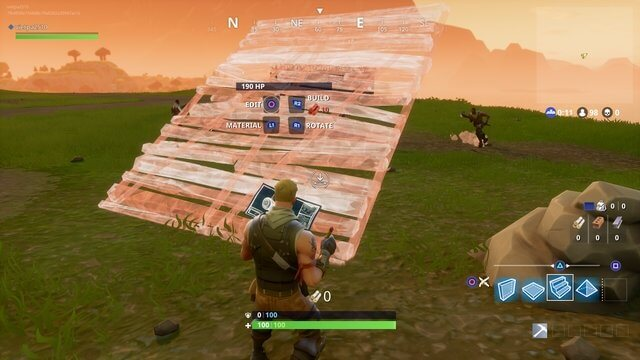

Trải nghiệm Fortnite Battle Royale: Hay như PUBG, nhưng lại miễn phí
Nếu không có đủ tiền mua key PUBG, cấu hình máy lại cùi, thì tại sao không thử Fortnite Battle Royale một lần xem sao nhỉ?
Có lẽ cũng không cần phải nói nhiều về PlayerUnKnown Battlegrounds (PUBG) – tựa game hiện đang làm mưa làm gió tại làng game thế giới trong năm 2017. Nhanh chóng phá đảo một loạt kỉ lục về doanh số lẫn số lượng người chơi, không ngạc nhiên khi một loạt game “ăn theo” PUBG liên tiếp xuất hiện như nấm mọc sau mưa chỉ trong vài tháng trở lại đây.
Đáng chú ý nhất trong số này có thể kể đến Fortnite – tựa game mới nhất của ông lớn Epic Games, vốn nổi danh với dòng game Gears of War. Mặc dù xuất điểm là một tựa game thuộc thể loại Tower Defense, tuy nhiên Epic Games khá biết thời thế khi trình làng Fortnite Battle Royale – chế độ PvP “ăn theo” PUBG của Fortnite vào ngày 26/9 vừa qua trên PS4, Xbox One & PC.
1. Gameplay giống PUBG, nhưng lại không mất phí?
Trái ngược với PUBG, vốn tốn khoảng 30$ mua key game bản quyền, game thủ không mất một khoản phí nào để chơi Fortnite Battle Royale. Thậm chí, hiện tại chế độ chơi này còn không hề có cash shop bán vật phẩm bằng tiền thật trong game.
Tương tự, với phiên bản PS4 & Xbox One, game thủ cũng có thể chơi online Fortnite Battle Royale thoải mái mà không cần thuê bao PlayStation Plus hay Xbox Live Gold. Hiển nhiên, chưa cần biết game hay dở ra sao, đây chắn chắn là một điểm cộng của Fortnite Battle Royale, khi không phải ai cũng cũng đủ cấu hình hay tiền bạc để trải nghiệm PUBG.
Về cơ bản, nếu từng chơi qua PUBG, bạn sẽ không khó để làm quen với Fortnite Battle Royale, bởi sự tương đồng đáng kể về về mặt lối chơi theo phong cách sinh tử: Không có cốt truyện, cũng chẳng có nhiệm vụ đặc biệt nào được giao, việc của bạn là sống sót càng lâu càng tốt, thế thôi!
Xe bus sinh tử, cứ lên xe là chết!
Tương tự, đấu trường sinh tử trong Fortnite Battle Royale cũng là một hòn đảo có diện tích khá lớn, vốn là nơi 100 người chơi phải tử chiến với nhau nhằm chọn ra kẻ chiến thắng duy nhất. Tuy nhiên, thay vì được không vận bởi máy bay quân sự như trong PUBG, người chơi lại nhảy dù từ một chiếc xe bus có gắn khinh khí cầu mang tên Battle Bus.
Cũng là đảo, cũng nhảy dù từ trên trời, Fortnite Battle Royale là “anh em cùng cha khác ông nội” của PUBG?
Khởi đầu game, mỗi người chơi sau khi nhảy dù sẽ phải nhanh chóng phải sục sạo khắp bản đồ để kiếm tìm các món vũ khí trang bị cho mình, vốn được bố trí ngẫu nhiên trong mỗi lần chơi.
Trong suốt thời gian chơi, khu vực có thể sinh tồn của hòn đảo cũng ngày càng thu hẹp, những người chơi nếu còn ở ngoài vòng bo sẽ nhanh chóng bỏ mạng. Điều này buộc game thủ phải tiến sát gần nhau hơn, tạo điều kiện cho các cuộc giao chiến khốc liệt trong game nhằm chọn ra kẻ chiến thắng sau cùng.
Ở ngoài vòng bo là sẽ mất mạng
Tiếng là game ăn theo, nhưng bản thân việc Fortnite Battle Royale tái hiện được những trải nghiệm độc đáo của PUBG cũng là một ưu điểm không thể bỏ qua.
Theo đó, người chơi có thể cảm nhận được sự căng thẳng khi vừa phải di chuyển từ khu vực này sang khu vực khác, vừa phải liên tục để ý xung quanh mình có địch đang ẩn nấp hay không. Hoặc đó là sự kịch tính khi đang cố gắng ẩn nấp, chờ cơ hội để lao ra “ăn vét” khi trận chiến chỉ còn gần chục người. Và hơn tất cả, là cảm giác vỡ òa khi là người cuối cùng còn sống sót trong cuộc đấu trí cân não 1 vs 99.

Không gì sướng hơn cảm giác “hốt hàng” người chơi khác rồi loot đồ của chính họ!
2. Ăn theo nhưng vẫn có bản sắc riêng
Nhìn chung, mặc dù lối chơi cốt lõi của Fortnite Battle Royale khá tương đồng, nếu không muốn nói là ăn theo kha khá so với PUBG, tựa game này vẫn có khá nhiều điểm khác biệt.
Hệ thống trang bị trong game tương đối đơn giản, bao gồm súng trường, súng máy, shotgun, súng lục….
Đơn cử như việc thay vì cố gắng càng chân thực càng tốt như PUBG, Fortnite Battle Royale lại thiên về phong cách casual dễ chơi nhiều hơn. Cụ thể, các trận đấu trong game diễn ra khá nhanh, với thời lượng chỉ khoảng 20 phút, rất phù hợp để những game thủ đang đi làm có thể chơi vào thời gian nghỉ trưa ngắn ngủi. Bản thân các trận đọ súng giữa người chơi vs người chơi cũng không quá nặng tính chiến thuật, phần nào gợi nhớ đến các tựa game TPS đơn giản dễ chơi.
Bản đồ trong game cũng có kích thước vừa phải, bé hơn so với kích thước 64km2 của PUBG, nhưng vẫn đủ rộng để người chơi khám phá. Mặc dù không cung cấp cho người chơi các phương tiện đi lại, buộc game thủ phải…cuốc bộ khắp bản đồ, việc di chuyển trong màn chơi không mất quá nhiều thời gian.
Bên cạnh đó, mặc dù “mang tiếng” là ăn theo, nhưng thực tế tựa game sinh tồn này vẫn có những điểm nhấn riêng biệt so với hàng sa số tựa game ăn theo khác.
Đáng chú ý nhất chính là tính năng tương tác với môi trường khá độc đáo, khi gần như tất cả mọi thứ trong thế giới của Fortnite Battle Royale, từ nhà cửa, cây cối, cho đến đất đá, xe cộ, cointainer….đều có thể phá hủy bằng súng đạn hoặc bằng….cuốc – vật dụng mặc định cung cấp cho người chơi vào đầu game.
Đập mọi thứ để lấy nguyên liệu nhé
Chính điều này mang đến sự đa dạng về mặt lối chơi, khi không một vị trí ẩn nấp nào trong game có thể đảm bảo an toàn tuyệt đối nữa. Chẳng hạn, khi thấy kẻ địch đang cố thủ trong một tháp canh cực cao, người chơi có thể nã đạn hoặc sử dụng cuốc phá hủy chân tháp nhằm khiến kẻ địch….sập nhà mà chết.
Xây tường, xây thang, xây cầu thang, xây nóc, cái gì cũng xây được hết
Bên cạnh đó, với tính năng xây dựng độc đáo thừa hưởng từ chính tựa game gốc, game thủ có thể xây dựng nên đủ loại công trình trong game dựa trên các loại nguyên liệu như gỗ, đá, sắt thu thập được sau khi phá hủy mọi thứ trong game. Tính năng này đương nhiên không phải để cho vui, khi nó có vai trò khá quan trọng trong chiến thuật chơi Fortnite Battle Royale của nhiều game thủ, trong đó có tôi.
Nấc thang lên thiên đường là đây?
Đơn cử, khi đang bị chế áp dưới làn đạn của một tên sniper không rõ vị trí, bạn có thể xây dựng 4 bức tường xung quanh mình để bảo vệ. Dị hơn nữa, bạn có thể thu thập thật nhiều nguyên liệu, sau đó xây một chiếc cầu thang thật cao theo kiểu “bắt thang lên hỏi ông trời”, đứng đó chờ đến gần cuối trận và…ăn last hit người chơi cuối cùng thôi!
Xét về mặt hình ảnh, mặc cho chủ đề chính của game là sinh tử, chém giết tới tận người cuối cùng, khá hài hước là phần đồ họa của game lại tương đối…dễ thương (?!) Trái ngược hoàn toàn với tông màu xám xịt đặc trưng của PUBG, Fortnite Battle Royale sử dụng tông màu sáng rực rỡ, với tạo hình nhân vật, nhà cửa, cây cối được thiết kế khá ngộ nghĩnh, phần nào gợi nhớ đến các bộ phim hoạt hình của Pixar.
Mặc dù đồ họa của game chưa thực sự khiến người chơi phải trầm trồ, Fortnite Battle Royale lại yêu cầu cấu hình máy tính nhẹ hơn rất nhiều so với PUBG. Đây chắc chắn là một điểm “hút khách” cho những game thủ sở hữu máy tính cấu hình trung bình/ yếu muốn trải nghiệm qua lối chơi sinh tử đang là xu hướng của làng game thế giới năm 2017.
3. Vẫn còn nhiều điểm trừ, nhưng tiềm năng ra phết đấy!
Điểm trừ dễ thấy đầu tiên chính là cơ chế bắn súng của game. Mặc dù được phát triển bởi cha đẻ của dòng game bắn súng góc nhìn thứ 3 nổi tiếng Gears of War, khá ngạc nhiên là phần bắn súng của Fortnite Battle Royale lại tương đối tệ hại. Chưa cần bàn đến việc bắn có đã tay hay không, các loại vũ khí trong game khi khai hỏa quá thiếu độ giật (recoil), mang đến cho người chơi cảm giác như đang bắn súng giấy.
Bên cạnh đó, Fortnite Battle Royale hiện tại vẫn còn thiếu khá nhiều tính năng cơ bản, đơn cử như hệ thống tùy biến phát triển nhân vật hay tính năng lập đội nhóm với bạn của mình trong danh sách bạn bè.
Sau mỗi trận đấu, kể cả khi là người sống sót duy nhất, bạn không hề nhận được bất kỳ phần thưởng đặc biệt nào từ game do hệ thống thưởng hiện vẫn chưa được tích hợp. Điều này vô hình trung khiến giá trị chơi lại của Fortnite Battle Royale giảm đi đáng kể, khi người chơi không có nhiều mục đích để chơi thêm ván nữa.
Tuy nhiên, điều này cũng khá dễ hiểu, khi Fortnite Battle Royale vẫn trong giai đoạn thử nghiệm. Bản thân Epic Games cũng hứa hẹn sẽ cập nhật thêm các tính năng trong tương lai.
Nhìn chung, không thể phủ nhận một điều, Fortnite Battle Royale vẫn là cái tên đầy tiềm năng nhất trong một loạt game ăn theo PUBG ở thời điểm hiện tại, khi sở hữu gameplay dễ chơi nhưng lại cuốn hút, cùng tính năng xây dựng, phá hủy môi trường khá độc đáo.
Trên thực tế, với cấu hình nhẹ nhàng, đã thế lại còn chơi miễn phí, sẽ là…dở hơi nếu bạn còn đắn đo có nên tải Fortnite Battle Royale về chơi hay không. Cá nhân tôi thì cho rằng, nếu không có tiền mua key PUBG, cấu hình máy lại cùi, thì tại sao không thử Fortnite Battle Royale một lần xem sao nhỉ?
Cấu hình yêu cầu bản PC:
- VGA: Nvidia GTX 660 hoặc AMD Radeon HD 7870, hỗ trợ DX11, 2 GB VRAM
- CPU: Core i5 2.8 Ghz
- Bộ nhớ: 8 GB RAM
- Hệ điều hành: Windows 7/8/10 64-bit
Cấu hình tối thiểu bản PC:
- VGA: Intel HD 4000
- CPU: Core i3 2.4 Ghz
- Bộ nhớ: 4 GB RAM
- Hệ điều hành: Windows 7/8/10 64-bit + Mac OSX Sierra